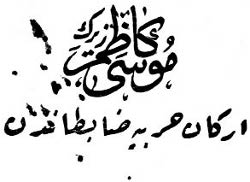

30 Kânunuevvel 1906 (17 Teşrinisani 1322) Cuma günü Osmanlı Hürriyet Cemiyeti Manastır merkezinin teşekkülü tarihidir. Ertesi günü Enver’le birleşerek düşündüklerimizi şöylece tespit ettik:
1 - Manastır merkezi kimlerden ibaret olacak?
2 - Tahlif heyeti kimlerden ibaret olacak?
3 - Uzaklarda merkezler teşkili için Selanik’e gönderilebilecek emin arkadaşlar hazırlamak.
4 - Ben Selanik’e gidinceye kadarki mesai programımızın tespiti.
5 - Hazırlığımız ve mütalaalarımızı merkez-i umumiye bildirmek ve icap eden talimatı almak üzere benim Selanik’e gitmemi temin etmek.
***
Hemen ertesi günü bütün bu esasları Enver’le birlikte tespit ettik. Hepsi beş maddelik bir program oldu. Enver’in teklifleri şunlardı:
1 – Manastır merkezi Enver, ben ve Hüseyin Bey’den ibaret olmak üzere üç kişi olacaktık. Enver, Selanik’te bu yeni cemiyete girmişti. Ben ve Hüseyin Bey de eskiden İttihat ve Terakki Cemiyeti mensubu idik. Ben de mutabık kalırsam Hüseyin Bey’i evinde ziyaretle yeni cemiyet namına Enver’le birlikte yemin ettirecektik. Hüseyin Bey, Kolonya eşrafından sivil bir zattı. Mülkiye Mektebi’nden diploma almış, temiz ve seciyeli bir insandı.
Cemiyetin faal merkezi Enver’le ben olacaktık. Hüseyin Bey ihtiyat olarak işe karışmaz görünecekti.
2 – Tahlif heyeti benim reisliğimde olmak üzere mıntıka erkân-ı harbiyesinde Mümtaz Yüzbaşı Server[30] ve Süvari Yüzbaşı Âkif [Erdemgil] (general ve mebus) beyler olacaktı. Bunlara da aynı suretle yemin ettirilecekti. Enver’in fikrine göre ben bu suretle ilk kuruluşta hem merkezde ve hem de tahlif heyetinde bulunmakla işleri istediğim gibi hızlı ve gizli yürütebilecektim.
Bu iki teklifi itiraz etmeden kabul ettim. Benim üç madde halindeki tekliflerim de şunlardı:
3 – Köprülü, Gevgili, Edirne, İzmir, Bolu’da derhal teşkilat yapabilecek fikren epeyce zamandan beri hazırladığım arkadaşları burada şahsen tahlif ederek Selanik merkezine takdim etmek ve bunlara, orada isterlerse bir daha merasimle yemin ettirip gidecekleri yerler için salahiyet vermek.
Köprülü’ye gitmek üzere olan benim staj yaptığım Onbeşinci Süvari Alayı’ndan Yüzbaşı Rasim, Alay Baytarı Recep, (Gevgili’de aynı alaydan Mülazım-ı Evvel Kâmil ve kardeşim Yüzbaşı Hulusi aynı iş için hazırdır). Edirne için yine bu alayın kolağası Ferhad Bey, oraya izinli gidecektir.
İzmir için Manastır Harbiye Mektebi tabiye ve seferiye muallimi sınıf arkadaşım Mümtaz Yüzbaşı Hulusi Bey, oraya izinli gidecektir.
Bolu ve Kastamonu havalisi için staja başladığım Onüçüncü Topçu Numune Alayı’nın dördüncü bölük kumandanı Mümtaz Yüzbaşı Bolulu Habip Bey[31] oraya izinli gidecektir.
Enver bu teklifimi büyük sevinçle kabul etti. Selanik’te Müfettişlik Erkân-ı Harbi Binbaşı İsmail Hakkı Bey’le aralarında “Çorap” kelimesi parola imiş. Bunu söyleyerek kendilerini tanıtsınlar. Bunları sen dediğin veçhile yemin ettir ve talimat ver gitsinler dedi. Ve ilave etti:
— Eğer muvaffak olurlarsa çok mühim bir eserin olacaktır. Merkez-i umuminin bu teşebbüsünü çok büyük takdirlerle karşılayacağından hiç şüphe etmiyorum.
4 – Manastır’da kenar bir yerde ben yeni bir ev tutacağım. Burası tahlif yeri olacak. Selanik’inki gibi yemin merasimi başlaması için benim gidip görüşmekliğim ve nizamname ve programı getirmekliğim zamanına kadar çok güvendiğimiz arkadaşları tespit etmek ve hazırlamak.
5 – Merkezde ve gerekse takiplerde ve tahkikata gidişte halka ve askere anlayabilecekleri bir dille ahvalden ve istikbalin tehlikesinden ve bunu önlemek imkânından bahsetmek. (Ben Türk köy mekteplerine hediyeler götürmek ve halka memleket işleri hakkında hasbıhale çoktan başlamıştım.)
***
Enver ve ben ayrı ayrı bu programımızı tatbike koyulduk ve birkaç gün içinde esasları hazırladık, işin en güç cihetini benim Selanik’e gidebilmekliğim teşkil etti. Çünkü daha iki buçuk ay evvel Selanik’ten gelmiş bulunduğumdan Mıntıka Erkân-ı Harbiye Reisimiz Hasan Tosun Bey izin için bir şart koştu: Bir müsademe yapmak! Ancak bu suretle mükâfat olarak Hadi Paşa’dan izin alabilirim, dedi.
Şu halde ara sıra takibe çıkmak ve komite aramak lazım geliyordu. Bu da zamanla olabilirdi. Bunun için Manastır’dan gidecek olan yukarda isimleri geçen arkadaşları cemiyet namına tahlif ettim, fakat parolaları öğretmedim. Enver Bey’den de Selanik’te İsmail Hakkı Bey’e bir mektup alarak bunlara verdim ve “Çorap” kelimesini parola olarak söylemelerini tembih ettim. Bunlardan Süvari Kolağası Ferhat Efendi’ye, ayrıca Edirne’de sınıf arkadaşım Mümtaz Yüzbaşı Seyfi Bey’e verilmek üzere bir de kartımı verdim. Kartım şöyle idi: Musa Kâzım Zeyrek. Erkân-ı harbiye zabitanından. Arkasına yazdığım da şu idi: “Kardeşim Seyfi Bey’e: Kardeşim, efendim. Bu kartı size verecek olan zat tarafından size sipariş edilecek hususi bir işin oraca bir an evvel tesviyesini istirham eylerim. Bu zatın ismi Ferhat Efendi’dir. Takdim etmekle müftehirim. 22 Teşrinisani 1322.”[32]
Ferhat Efendi aynı zamanda daha mektepten fikir birliğimiz bulunan Yüzbaşı İsmet Bey’le de görüşecekti. Eğer kartım kendisine sual sorabilecek bir ele geçerse sipariş ettiğim işin evlenmek olduğunu söyleyecekti.
***
Eh artık keyfimiz yerinde idi. Manastır’da merkez ve tahlif heyeti ve tahlif olunacak kimselerde de fikir hazırlığı yapıldığı gibi, Vardar boyunda oraya giden Onbeşinci Süvari Alayı’ndan Yüzbaşı Rasim ve Baytar Recep, Edirne’de Ferhat, İzmir’de Mümtaz Yüzbaşı Hulusi, Bolu ve havalisinde de Mümtaz Topçu Yüzbaşı Habip Selanik’te tahlif olunarak bir anda cemiyetin muhtelif şubelerini teşkil edeceklerdi.
Artık iki işimiz kalmıştı. Biri tahliflere müsait olmak üzere benim oturmaklığım için münasip yerde bir ev bulmaktı. Şimdiki Drahor boyundaki evim bu işe müsait değildi. İkincisi de, sık sık komite takibine çıkarak bir müsademe yapmak ve bu suretle Selanik’e gitmek için mükâfat izni alabilmekti. Avcı Taburu’ndan bir müfreze ile 5 Kânunuevvel’de (22 Teşrinisani Rumi) Buf üzerinden Presbe-Resne-Gobeş mıntıkalarını taradık. Bir hafta süren bu takipte karlar içinde büyük zorluk ve tehlikeler geçirdik. İlk gece Buf’taki sabit karakolumuz bir Rum çetesiyle müsademe etmiş. İki maktul, bir de sağ ele geçmiş. Uzaktan silah seslerini duyduk, fakat bu müsademeye yetişmek mümkün olamadı. Tesadüf bir gün sonra olsaydı, işimiz uygun gidebilecekti. Bu müsademeyi tabii benim hesabıma saymadılar ve Selanik’e de izin vermediler.

Kartvizit
Halbuki bu takip az daha benim hayatıma mal oluyordu. Şöyle ki: Resne mıntıkasından Gevat boynuna çıkarken kar fırtınası çok azıtmıştı. Yol tamamıyla kapanmıştı. Yürüyüş kolu intizamsız perakende haline dönmüştü, önde gidenlerin izleri de anında karla örtülüyordu. Yolun sol tarafı uçurumdu. Birdenbire atımla birlikte karlara gömüldük. Atım uçuruma düşmüştü. Yalnız başı dışarda kaldı. Ben de belime kadar atımla birlikte kara saplanmıştım. Çabuk karar verip, yüzer gibi sağ yana uzanıverdim ve haykırmaya başladım. İki nefer beni şoseye çekti. Atın dizginlerini bırakmamıştım. Geriden gelenlerin de yardımı ile atı da kurtarabildik.
Bu takipte Resne Türk köylülerine ve müfrezeme başımızda dönen bu belaların nerelerden geldiğini anlayacakları bir dil ile ben ve zabit arkadaşlarım anlatmakla, az da olsa hayırlı bir iş yapmış olduk.